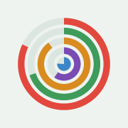
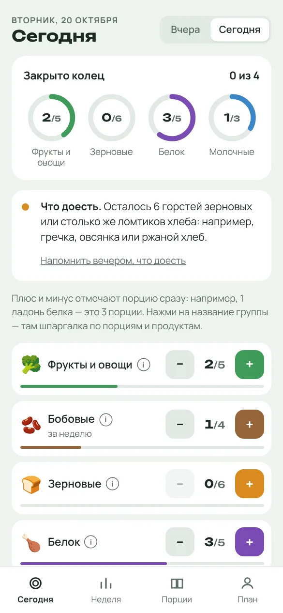
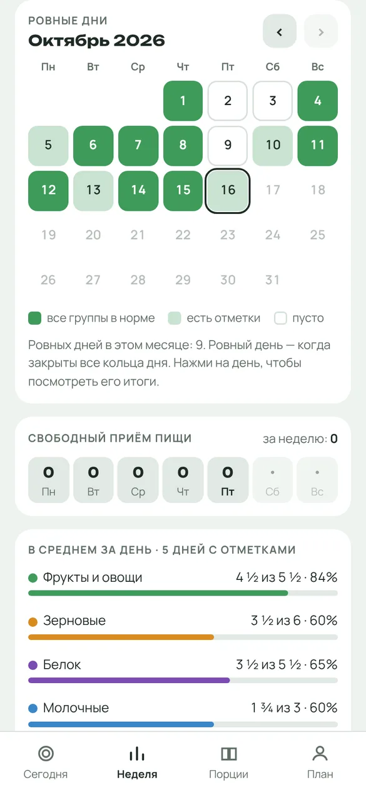
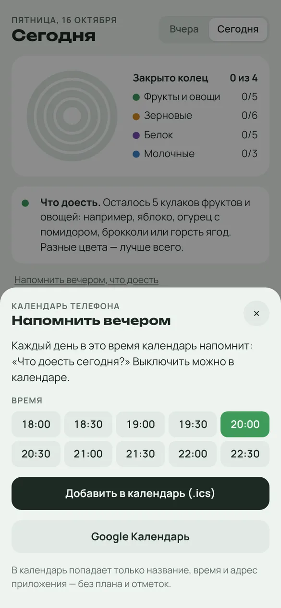
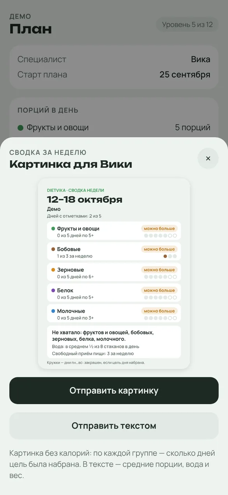

DietVika Как установитьОтмечай порции руками: ладонь белка, кулак овощей, горсть крупы. Кольца дня покажут, чего хватило, а чего ещё стоит доесть.
Без регистрации. Все отметки хранятся только в твоём телефоне.

Приложение помогает отслеживать питание через порции основных групп продуктов — без необходимости постоянно взвешивать еду и считать калории.
В основе подхода — ориентировочные потребности человека и научно обоснованные рекомендации по здоровому питанию. На их основе формируются ориентиры по группам продуктов с учётом потребностей и целей человека.
Чтобы сделать отслеживание удобнее, в приложении используется метод порций рукой: ладонь, кулак, горсть и палец помогают приблизительно оценивать количество еды в повседневной жизни.
Рука всегда под рукой и служит удобным ориентиром, но не является точным измерительным инструментом.
Размеры порций приблизительны и зависят от продукта.
Как это работает
После консультации она подбирает, сколько порций каждой группы тебе нужно в день, и присылает ссылку с планом.
План сам встаёт в приложение. Ничего настраивать не нужно.
Съела яблоко, нажми плюс у «Фруктов и овощей». Одно касание, без поиска продуктов и граммов.
Что внутри
Каждая группа продуктов замыкает своё кольцо. Подсказка ниже говорит простыми словами, чего ещё не хватает сегодня: например, «осталось 5 кулаков фруктов и овощей: яблоко, огурец с помидором, брокколи».

Ровный день — когда закрыты все кольца. Зелёные клетки в календаре легко считать, и видно, как привычка закрепляется от недели к неделе.

Выбери время, и календарь телефона каждый вечер спросит: «Что доесть сегодня?» Пара минут, и день закрыт.

Одна кнопка собирает неделю в картинку: по каждой группе видно, сколько дней цель была набрана. Отправляешь её Вике в мессенджер, и она видит прогресс без фото каждой тарелки.
Калорий в сводке нет, только порции.
Подход
«Мой подход не заключается в ограничении. Человек к этому сам приходит, и то к осознанности. Запреты приведут к тому, что он сорвётся».Вика, диетолог
Десерт или фастфуд просто отмечаются отдельной строкой, без лимита и красных цифр «превышено». Цифры калорий приложение тебе не показывает вообще: они как раз и вызывают тревогу.
Цель — пять порций фруктов и овощей в день. Съела пять — уже хорошо.
Кто ведёт
Установка
Сейчас идёт тестирование с первыми клиентами. На Android приложение ставится файлом с этого сайта, на iPhone добавляется на экран «Домой» из Safari. Работает оно так же, как обычное.
Никуда. Отметки хранятся только в памяти телефона, сервера и регистрации нет. Вика видит только то, что ты сама отправишь ей сводкой.
Отметки удалятся вместе с ним. План можно вернуть, снова открыв ссылку от Вики.
Можно открыть демо-план и посмотреть, как всё устроено. Но нормы порций подбираются под человека, поэтому для настоящего плана нужна консультация.